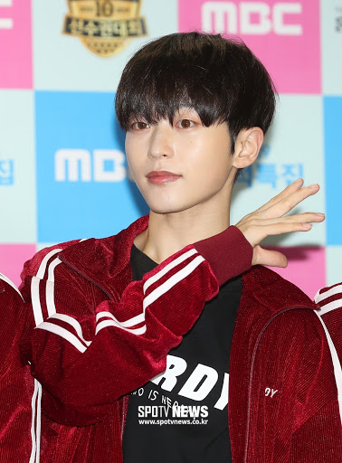

고막 있으면 모스코 모스코 들어 온앤오프 플라이 투 더 문도 개좋음
2019년 8월 23일 WM 측의 공지를 통해 라운의 온앤오프 탈퇴 소식이 알려졌다. 개인적인 사정으로 연예 활동을 중지하고 팀 탈퇴와 함께 전속 계약을 해지한다는 내용이었다.
공지가 올라오기 직전까지 컴백 티저, 커버 영상 등이 올라오고 있었고 같은 팀 멤버들이었던 이션과 MK가 공지 게재 직전까지 브이앱 라이브 방송을 진행할 만큼 멤버들도 이 상황을 전혀 모르고 있었다. 무엇보다 라운이 11일 전에는 아육대에 출연하였으며 3일 전까지 트위터에 본인 셀카와 함께 글도 올려 팬들은 더욱 혼란스러움을 감추지 못했다. [8]
